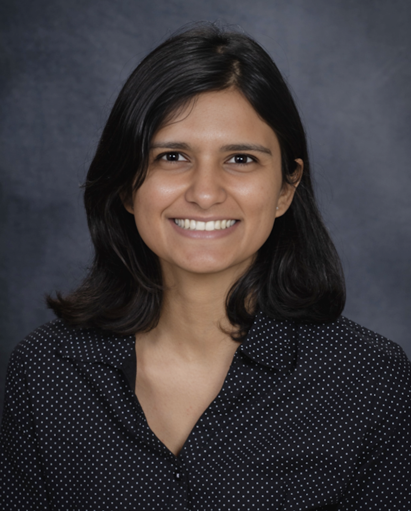

About Me

As a Financial Economics major at Texas A&M University, I'm passionate about unraveling the complexities of global financial markets and economic systems. My academic journey has equipped me with a robust foundation in econometrics, financial management, and transfer pricing, fueling my enthusiasm for economic research and consultancy. Throughout my studies, I've honed my skills in data analysis, becoming proficient in working with panel, cross-sectional, time series, and pooled data sets. My programming expertise spans R, Python, Stata, SAS, Julia, and Matlab, enabling me to tackle complex financial analyses with precision and efficiency.
My experience as a research assistant and intern in various development economics projects has provided me with valuable real-world exposure. These roles have not only sharpened my analytical abilities but also given me the opportunity to engage with government and corporate stakeholders, enhancing my communication and collaboration skills. One of my proudest achievements is co-authoring a paper accepted at the International Conference of the Learning Sciences (ISLS), which demonstrates my capacity to contribute to academic discourse and apply analytical skills across disciplines.
I'm particularly drawn to the intricate dynamics of transfer pricing, mergers and acquisitions, and anti-trust issues. My goal is to leverage my analytical skills and economic insights to tackle complex financial challenges and drive informed decision-making in these areas. As I look to the future, I aim to build a career in economic consultancy, with the long-term aspiration of taking on leadership roles where I can make significant contributions to economic research and policy-making.
Beyond my professional interests, I'm a firm believer in the power of continuous learning. I approach every challenge with grit, consistency, and dedication, driven by a passion for economics that extends far beyond the classroom. This mindset pushes me to constantly seek out opportunities to apply my knowledge in real-world scenarios and expand my understanding of global economic issues.
TI'm always eager to connect with fellow economics enthusiasts, potential mentors, or industry professionals. If you'd like to discuss economics, explore potential collaborations, or learn more about my experiences and aspirations, please don't hesitate to reach out. I look forward to engaging in meaningful conversations and continuing to grow in this exciting field.
Skills and Achievements
Conference Presentations:
• Chowdhury, Mahjabin, Anjana Azhuvath, and Asha Rao. "From Drawing to Understanding: Constructionist Approaches in Teaching Complex Biology Concepts." Proceedings of the 18th International Conference of the Learning Sciences-ICLS 2024, pp. 2141-2142. International Society of the Learning Sciences, 2024
• Technnological Unemployement in the Indian Automotive Industry, Indian Economic Association Conference, 2019
Scholarships:
• Merit-based Scholarship, Department of Economics, Texas A&M University, (Jan 2023 - May 2023)
• Shri VL Ethiraj Merit-based Scholarship, Ethiraj College for Women (June 2018 - Apr 2019)
Leadership:
• Financial Management Association, General Officer, Texas A&M University (Aug 2024 - Dec 2024)
• Board Member, Chamber of Economics, Stella Maris College (Jun 2020 - Apr 2021)
• Association Secretary, Department of Economics, Ethiraj College for Women (Jun 2018 - Apr 2019)
Certification:
• Bloomberg Market Concepts
• Bloomberg ESG
• CFI, Mergers and Acquisitions Modelling
• CFI, M&A Accounting and Price Allocation
Education
Ms, Financial Economics | Texas A&M University (Dec - 2024)
• Coursework: Transfer Pricing, Financial Econometrics, Financial Management,Statistical Methods in Finance
MA, Economics | Stella Maris College, University of Madras (Apr 2021)
• Coursework: International Trade, Econometrics I & II, Microeconomics I & II, Macroeconomics I & II
BA, Economics | Ethiraj College for Women, University of Madras (Apr 2019)
• Coursework: Foundations of Financial Accounting, Management Accounting, Statistics I & II
Work Experience
Graduate Assistant, Research @ Center for Teaching Excellence (Apr 2023 - Present)
• Applied cross-sectional data analysis in R, quantifying the impact of translanguaging on K-12 classrooms
• Facilitated evidence-based curriculum design, estimating learner's skill development in an AI-integrated course
• Conducted a mixed-methods study using Jupyter to estimate the relationship between student confidence and test scores pre- and post-intervention
Research Assistant @ Tamil Nadu Household Panel Survey (Oct 2021 - Aug 2022)
• Monitored execution of pilot survey across 876 households
• Collaborated with project team to estimate 2023-2024 fiscal year expenses, securing Rs. 1 million in funding
• Engineered onboarding documents, resulting in 28% reduction in training period
• Ascertained effectiveness of food assistance schemes and financial aid during COVID-19 lockdown using STATA
• Partnered with research team, producing 32 district-level reports, utilizing pre-baseline findings
• Initiated development of high-frequency dashboards tracking KPIs, including competition rate, consent rates, and enumerator bias, boosting productivity by 14.3%
Research Intern @ Tamil Nadu Covid Pulse Survey (Jul 2021 - Sept 2021)
• Reported and visualized findings on online education access and vaccine uptake for 12741 households on Tableau
• Executed comprehensive audio audit, back-checks and super-checks for telephonic interviews for 300 participants
Research Intern @ Economic Valuation of Wetland Ecosystems (May 2021 - Jun 2021)
• Employed ”willingness to pay approach”, evaluating economic value of inland-wetlands for 2 districts
• Liaised with Public Works Department, collecting data on scheme’s budget allocation and expenditures
Research Intern @ Stella Maris College for Women (Jun 2020 - Sept 2020)
• Orchestrated a tool-kit for preliminary data analysis on MS Excel for sophomore-year students
• Employed dummy-variable and semi-log models, determining the academic achievement and regional disparities prior to the pandemic.
Finance Intern @ Kotak Life (May 2018 - Jun 2018)
• Performed in-sample forecasts to check for best fit model, identifying 8% quarterly sales growth potential
• Developed and automated financial models to forecast revenues, cash flows, and other key financial metrics,contributing to a 21% reduction in budget preparation time
Economic Analyst Intern @ Akara Research & Technologies Pvt Ltd (Feb 2018 - Mar 2018)
• Enhanced client's operational efficiency by 3.5%, adopting tech-enabled audit of Oem dealerships.
• Performed feasibility studies and real-time data projections, forecasting passenger & goods traffic on proprietary software.
Capital Markets Intern @ TradePlus Online (Oct 2017 - Feb 2018)
• Minimized trade rejections cost by 2% for NRE clients through optimized trade execution processes
• Improved client retention by 5%through expedited pay-in and pay-out procedures
Administered margin shortfall protocols and square-offs to mitigate credit risk exposure for 35 clients